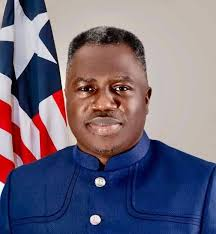

Honorable Jeremiah Kpan Koung
Vice President of Liberia
RECENT DOCUMENTS
Special Remarks Delivered By H.E. Joseph Nyuma Boakai, Sr. President of the Republic of Liberia at the Graduation Ceremony of the At-Risk Youth Empowerment Program (AR-YEP) Thursday, April 11, 2024 EJS Ministerial Complex, Congo Town, Liberia
PRESIDENT BOAKAI REMARKS AT THE RAMADAN DINNER AT THE MINISTERIAL COMPLEX APRIL 5, 2024
Executive Order No. 128 - Suspension of surcharge on Petroleum Pricing Structure.pdf
President Boakai Issues Executive Order #127 Exempting LWSC From Customs Duties
Special Ramadan message Issued by His Excellency Joseph N. Boakai, Sr. President of the Republic of Liberia On the occasion of the start of 2024 ISLAMIC HOLY MONTH OF RAMADAN Sunday, March 10, 2024